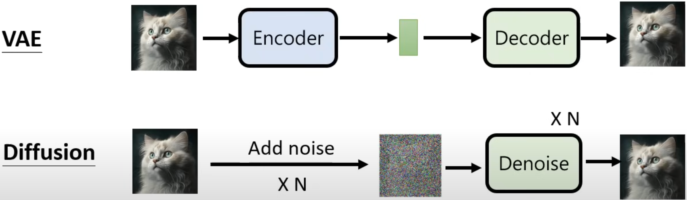
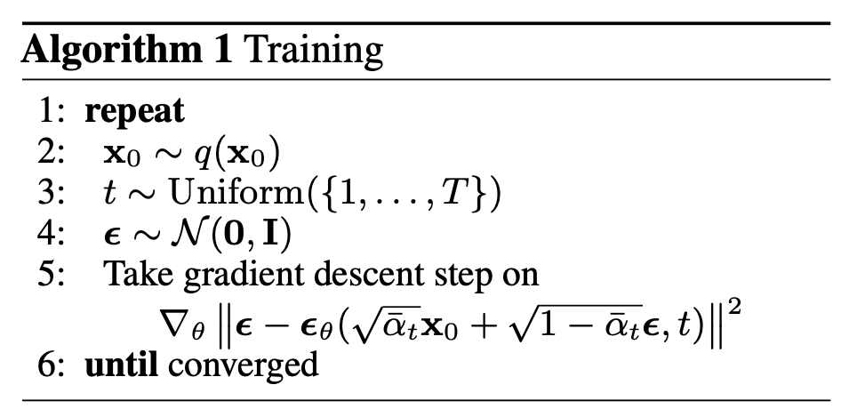
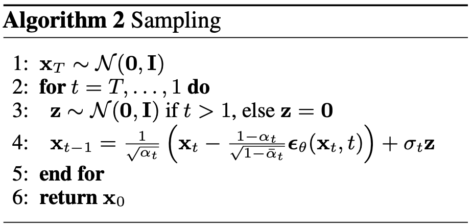
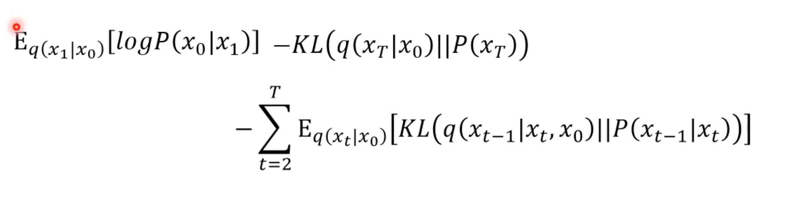
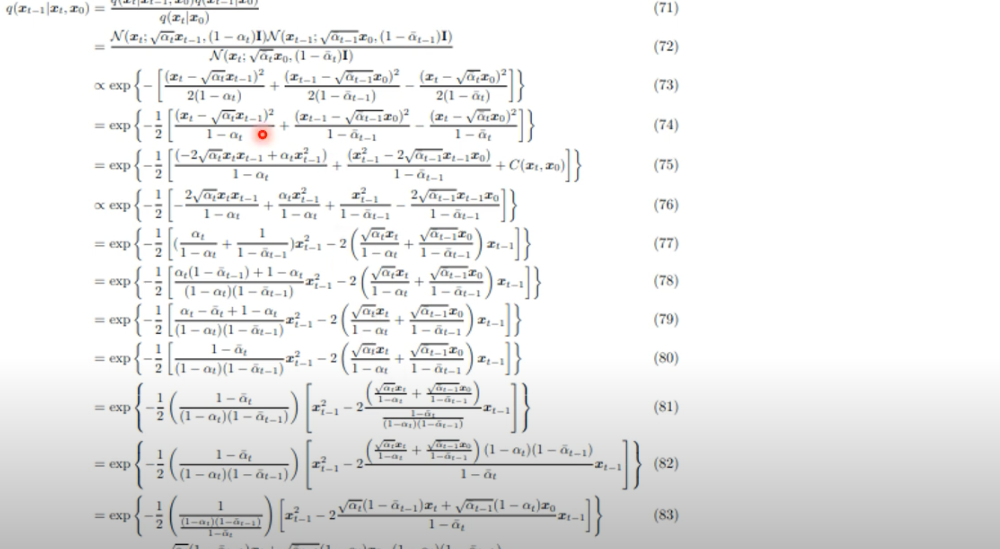

A Diffusion model is a type of generative model that involves two processes. In the forward process, noise is incrementally added to an image in a predefined manner, while in the reverse process, the model learns to denoise the samples. During this denoising process, the model learns how to generate samples. Forward Process:
$$ X_0 \rightarrow \cdots \rightarrow X_{t} \rightarrow \cdots \rightarrow X_{T} $$Reverse Process:
$$ X_T \rightarrow \cdots \rightarrow X_{t} \rightarrow \cdots \rightarrow X_{0} $$$X_T$: noise $X_0$: original sample
VAE vs. Diffusion model
 In diffusion model, the process of adding noise is similar with encoder in VAE, except that it is not learnable. The process of denoise is similar with decoder in VAE.
Training in Diffusion model
 $\mathbf{\epsilon}_{\theta}$ is a noise predictor. It take as input the noised image, and time step $t$ to predict the noise.
Inference in Diffusion model
 Notably, after removing the noise, additional noise $\mathbf{z}$ is added.
Aim of image generation
Let $z$ be the latent space, then a neural network $G$ take $z$ as input and output a image $x$, they want the distribution of $x$ to be as close as with the real image generation.
How to achieve this aim?: Maximum Likelihood Estimation Suppose the distribution generated by $G$ is $P_{\theta}(x)$, sample ${x^1, x^2, \cdots,x^m}$ from $P_{\text{data}}(x)$, the optimal $\theta$ is defined as follows:
$$ \theta^{*} = \argmax_{\theta}\prod_{i=1}^{m}P_{\theta}(x^i) $$Why does Maximum Likelihood Estimation work? relation between MLE and KL.
$$ \begin{aligned} & \theta^*= \arg \max _\theta \prod_{i=1}^m P_\theta\left(x^i\right)=\arg \max _\theta \log \prod_{i=1}^m P_\theta\left(x^i\right) \\ &=\arg \max _\theta \sum_{i=1}^m \log P_\theta\left(x^i\right) \approx \arg \max _\theta E_{x \sim P_{\text {data }}}\left[\log P_\theta(x)\right] \\ &=\arg \max _\theta \int_x P_{\text {data }}(x) \log P_\theta(x) d x-\int_x P_{\text {data }}(x) \log P_{\text {data }}(x) d x \\ &=\arg \max _\theta \int_x P_{\text {data }}(x) \log \frac{P_\theta(x)}{P_{\text {data }}(x)} d x=\arg \min _\theta K L\left(P_{\text {data }} \| P_\theta\right) \end{aligned} $$VAE
The definition of $P_{\theta}(x)$.
$$ P_{\theta}(x) = \int_{z} P(z)P_{\theta}(x|z)dz $$Lower bound of $\log p(x)$
$$ \begin{aligned} \log P_{\theta} (x) &= \int_{z}q(z|x)\log P(x)dz, \quad \text{ $q(z|x)$ can be any distribution} \\ &= \int_{z}q(z|x)\log (\frac{P(z, x)}{P(z|x)}) dz \\ & = \int_{z}q(z|x)\log (\frac{P(z, x)}{q(z|x)} \frac{q(z| x)}{P(z|x)}) dz \\ &= \int_{z}q(z|x)\log \left(\frac{P(z, x)}{q(z|x)}\right)dz + \underbrace{ \int_{z}q(z|x) \left(\frac{q(z| x)}{P(z|x)}\right) dz}_{\geq 0} \\ &\geq \int_{z}q(z|x)\log \left(\frac{P(z, x)}{q(z|x)}\right)dz = \underbrace{ E_{q(z|x)} \log \left[\frac{P(z, x)}{q(z|x)}\right]}_{\text{lower bound}} \end{aligned} $$DDPM
$$ P_{\theta}(x_0) = \int_{x_1:x_T} P(x_T) P_{\theta}(x_{T-1}|x_T) \cdots P_{\theta}(x_{t-1}|x_t) \cdots P_{\theta}(x_{0}|x_1) d x_1:x_T $$Similar with VAE, the lower bound of DDPM is defind as follows:
$$ E_{q(x_1:x_T|x_0)} \log \left[\frac{P(x_0:x_T)}{q(x_1:x_T|x_0)}\right] $$Based on Markv property,
$$ q(x_1:x_T|x_0) = q(x_1|x_0) q(x_2|x_1) \cdots q(x_T|x_{T-1}) $$After change the formula, refer to Eq, 47 - 58 in Denoising diffusion probabilistic models.
$$ \begin{aligned} E_{q(x_1:x_T|x_0)} \log \left[\frac{P(x_0:x_T)}{q(x_1:x_T|x_0)}\right] = E_{q(x_1|x_0)}[\log P(x_0|x_1)] - KL\left(q(x_T|x_0)||P(x_T)\right) - \sum_{t=2}^{T}E_{q(x_t|x_0)}\left[KL\left(q(x_{t-1}|x_t, x_0)||P(x_{t-1}|x_0) \right) \right] \end{aligned} $$Now, based on the Forward process, we know $p(x_{t-1}|x_t)$  
Forward Process
The forward process is one where noise is gradually added to the original distribution of the image $x_0 \sim q(x_0)$.
The distribution between adjacent time steps is given as follows, where $\beta_t$ is a predefined parameter that increases gradually with each time step.
$$ q(x_t| x_{t-1}) = \mathcal{N}(x_t; \sqrt{1 - \beta_{t}}x_{t-1}, \beta_{t}\mathbf{I}) $$Based on the reparameterization trick, the relationship between $x_t$ and $x_{t-1}$ is as follows:
$$ \begin{aligned} x_t = \sqrt{1 - \beta_t} x_{t-1} + \sqrt{\beta_t}\epsilon_{t-1}, \text{where } \epsilon_t \sim \mathcal{N}(0, \mathbf{I}) \end{aligned} $$Assuming $\alpha_t = 1 - \beta_t$ and substituting it into the above equation, we obtain the following expression:
$$ \begin{aligned} x_t &= \sqrt{\alpha_t} x_{t-1} + \sqrt{1 - \alpha_t}\epsilon_{t-1} \\ &= \sqrt{\alpha_t} (\sqrt{\alpha_{t-1}} x_{t-2} + \sqrt{1 - \alpha_{t-1}}\epsilon_{t-2}) + \sqrt{1 - \alpha_t}\epsilon_{t-1} \\ &= \sqrt{\alpha_{t}\alpha_{t-1}} x_{t-2} + \sqrt{\alpha_{t}(1 - \alpha_{t-1})} \epsilon_{t-2} + \sqrt{1 - \alpha_{t}} \epsilon_{t-1}\\ \end{aligned} $$Since the variance of $\mathcal{N}_1 + \mathcal{N}_2$ is $\sigma_1 + \sigma_2$, we have $\sqrt{\alpha_{t}(1 - \alpha_{t-1})} \epsilon_{t-2} + \sqrt{1 - \alpha_{t}} \epsilon_{t-1} \sim \mathcal{N}(0, (1-\alpha_t \alpha_{t-1})\mathbf{I})$.
Assuming $\epsilon \sim \mathcal{N}(0, \mathbf{I})$,
$$ \begin{aligned} x_{t} &= \sqrt{\alpha_{t}\alpha_{t-1}} x_{t-2} + \sqrt{1 - \alpha_{t}\alpha_{t-1}} \epsilon\\ &\vdots\\ x_{t} &= \sqrt{\bar{\alpha}_{t}} x_{0} + \sqrt{1 - \bar{\alpha}_{t}} \epsilon \quad \bar{\alpha}_{t} = \prod_{s=1}^{t}\alpha_{s} \end{aligned} $$By applying the reparameterization trick in reverse, we obtain the following equation:
$$ q(x_t|x_0) = \mathcal{N}(x_t; \sqrt{\bar{\alpha}_{t}} x_{0}, (1 - \bar{\alpha}_{t}) \mathbf{I}) $$Based on the above equation, we can conveniently obtain the sample at time step $t$.
ELBO of DDM
Reverse Process
The reverse process is the gradual removal of noise. In diffusion models, the process is approximated using the posterior distribution from the forward process, $q(x_{t-1}|x_{t}, x_0)$. Based on Bayes rules, we have
$$ \begin{aligned} q(x_{t-1}|x_{t}, x_0) &= \frac{q(x_{t-1}, x_{t}, x_0)}{q(x_{t}, x_0)} \\ &=\frac{q(x_t|x_{t-1}, x_0)q(x_{t-1}|x_0)q(x_0)}{q(x_{t}|x_0) q(x_0)} \\ &=\frac{q(x_t|x_{t-1}, x_0)q(x_{t-1}|x_0)}{q(x_{t}|x_0)} \end{aligned} $$where, $q(x_t|x_{t-1}, x_0) = q(x_t|x_{t-1})$ which is based on markov assumption.
$$ \begin{aligned} q(x_{t-1}|x_{t}, x_{0}) &= \frac{q(x_{t}|x_{t-1}, x_{0}) q(x_{t-1} | x_{0})}{q(x_{t}|x_{0})} \\ &\propto \exp ( (- \frac{(x_t - \sqrt{1 - \beta_{t}}x_{t-1})^2}{2\beta_{t}}) + (- \frac{(x_{t-1} - \sqrt{\bar{\alpha}_{t-1}}x_{0})^2}{2(1 - \bar{\alpha}_{t-1})}) - (- \frac{(x_{t} - \sqrt{\bar{\alpha}_{t}}x_{0})^2}{2(1 - \bar{\alpha}_{t})}) )\\ &\propto \exp \left( -\frac{1}{2}\cdot ( (\frac{\alpha_{t}}{\beta_{t}} + \frac{1}{1 - \bar{a}_{t-1}}) x^{2}_{t-1} + (\frac{-2 \sqrt{\alpha_{t}} x_{t}}{\beta_{t}} + \frac{-2\sqrt{\bar{\alpha}_{t-1}} x_{0}}{1 - \bar{\alpha}_{t-1}})x_{t-1} - C(x_t, x_0) ) \right) \end{aligned} $$We aim to construct a form similar to the Gaussian formula, $f(x) = \frac{1}{\sigma \sqrt{2 \pi}} e^{\frac{-(x-\mu)^2}{2\sigma^2}} \propto \exp(\frac{-(x-\mu)^2}{2\sigma^2})$. Based on quadratic formula, we have
$$ \begin{aligned} a &= \frac{\alpha_{t}}{\beta_{t}} + \frac{1}{1 - \bar{a}_{t-1}} \\ b &= \frac{-2 \sqrt{\alpha_{t}} x_{t}}{\beta_{t}} + \frac{-2\sqrt{\bar{\alpha}_{t-1}} x_{0}}{1 - \bar{\alpha}_{t-1}} \\ \end{aligned} $$$$ \begin{aligned} \mu = - \frac{b}{2a} = \frac{\sqrt{\alpha_{t}}(1 - \bar{\alpha}_{t-1})}{1 - \bar{\alpha}_{t} } x_{t} + \frac{(1 - \alpha_{t}) \sqrt{\bar{\alpha}_{t-1}}}{1 - \bar{\alpha}_{t}} x_{0} \\ \end{aligned} $$In forward process， $x_{t} = \sqrt{\bar{\alpha}_{t}} x_{0} + \sqrt{1 - \bar{\alpha}_{t}} \epsilon$, we have
$$ x_0 = \frac{1}{\sqrt{\bar{\alpha}_{t}}} (x_{t} - \sqrt{1 - \bar{\alpha}_{t}} \epsilon)$$Substitute $x_0$ into the formula for $\mu$, we have:
$$ \mu = \frac{1}{\sqrt{\bar{\alpha}_{t}}} (x_t - \frac{1 - \alpha_{t}}{\sqrt{1 - \bar{\alpha}_{t}}} \epsilon ) $$Since $\Sigma$ is only related to $\beta$, it is a constant.
Pytorch Implementation
In practice, training a diffusion model is not from t=0 to t=T.
References
DDPM: Ho, J., Jain, A., & Abbeel, P. (2020). Denoising diffusion probabilistic models. Advances in neural information processing systems, 33, 6840-6851. https://www.youtube.com/watch?v=ifCDXFdeaaM